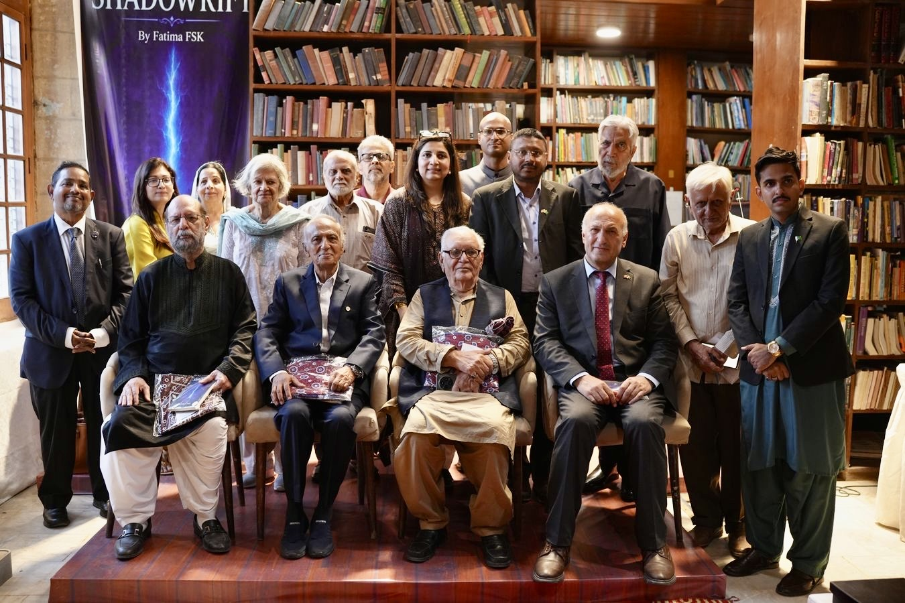
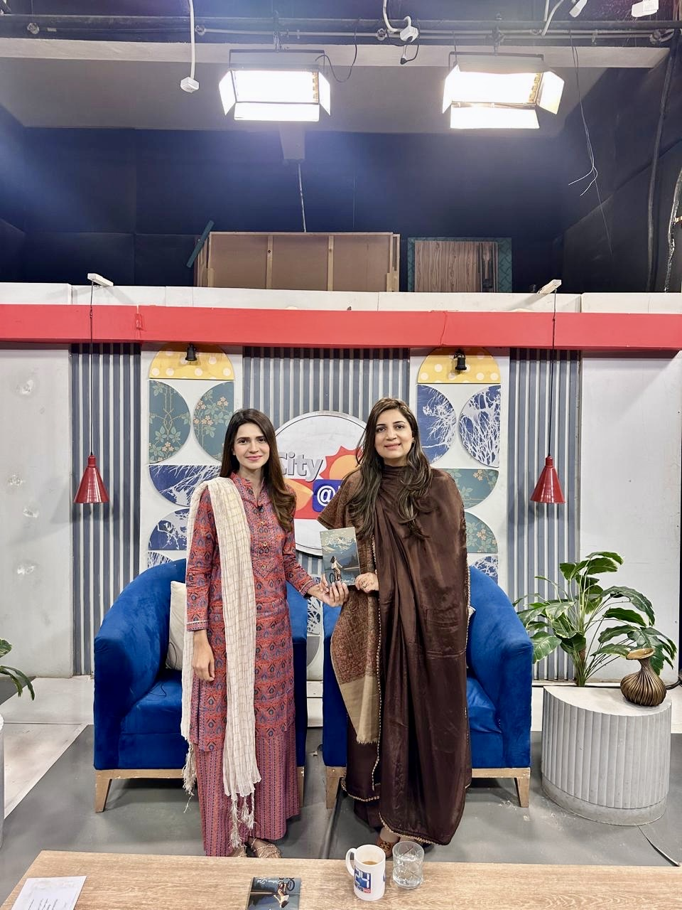
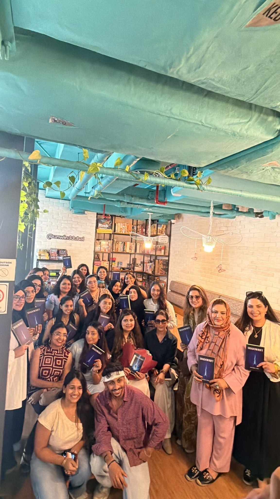
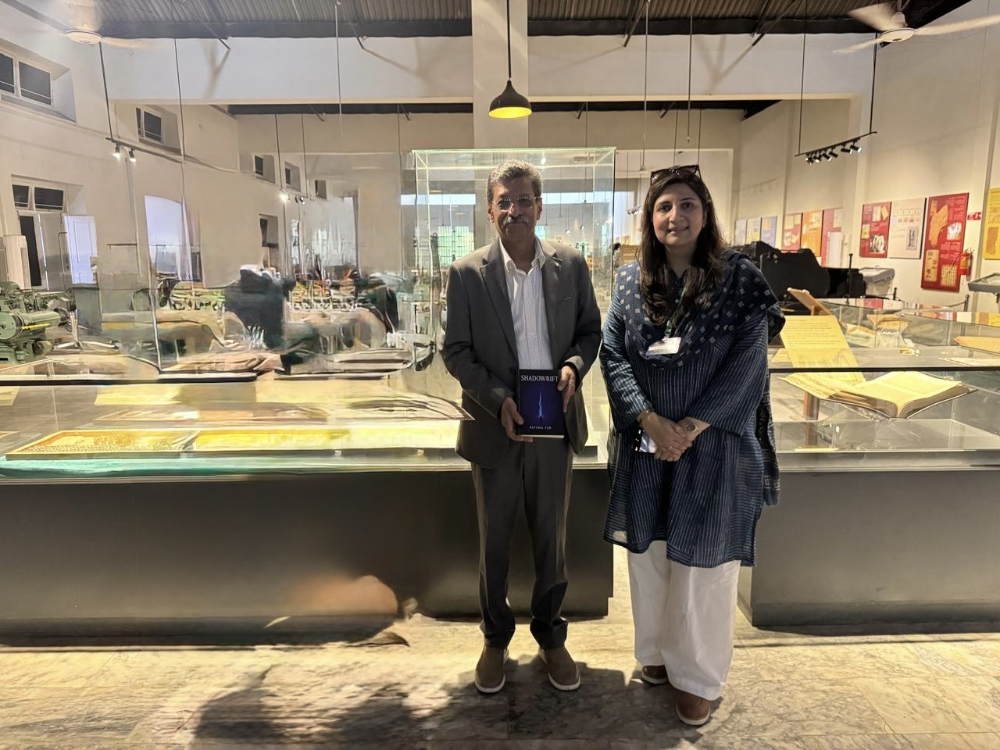
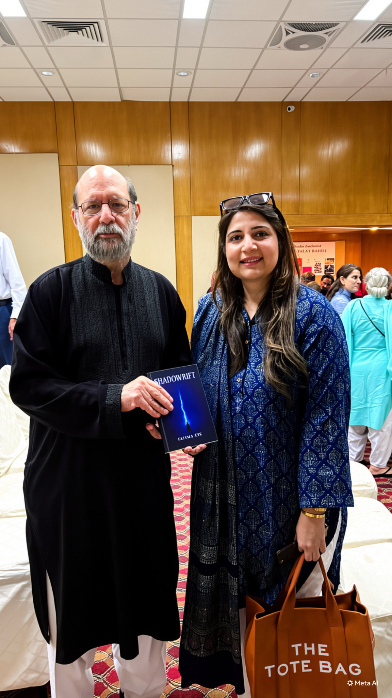

Selected coverage
Press &
perspective.
External coverage remains linked to its original publication.
Public moments
Beyond the
headline.
Selected photographs from literary gatherings, interviews and conversations surrounding the books.





Social journal
Moments beyond
the page.
Follow speaking moments, literary gatherings, interviews, social-impact work and ongoing reflections through Fatima's Instagram journal.
Visit Instagram →